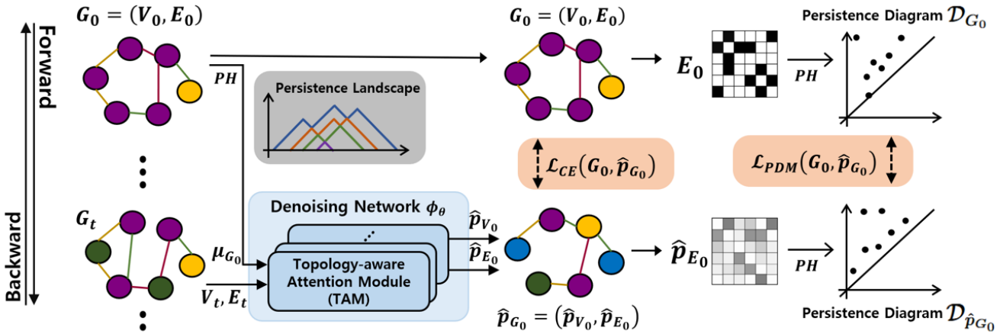
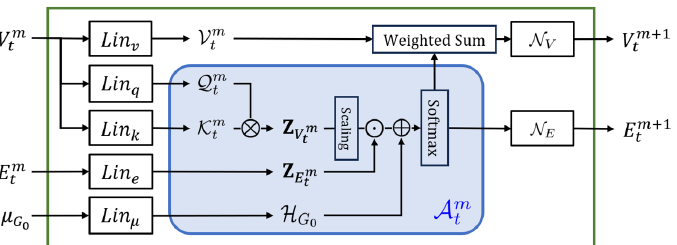
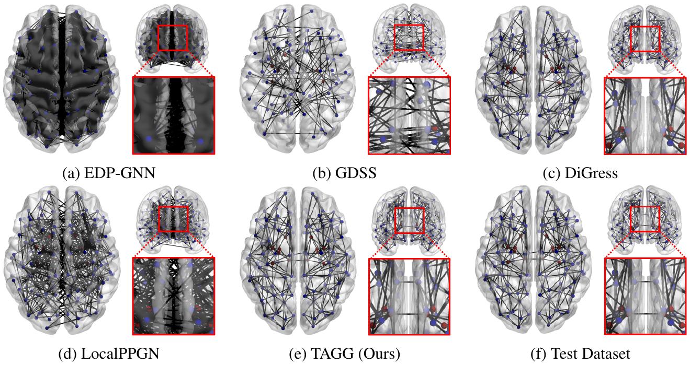
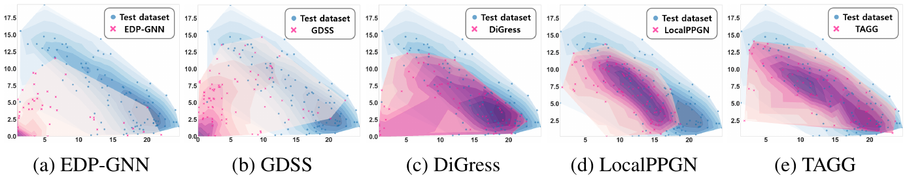

Abstract
Existing graph generation methods approximate the joint distribution of nodes and edges but often overlook topological properties such as connected components and loops, failing to reproduce global structure. We propose TAGG, a Topology-Aware diffusion-based Graph Generation framework that samples graphs closely resembling the homological characteristics of the reference graphs via persistent homology. TAGG builds on two components: a Persistence Diagram Matching (PDM) loss that enforces high topological fidelity, and a Topology-aware Attention Module (TAM) that injects homological features of the original graphs into the denoising network. Across standard graph benchmarks, TAGG achieves strong generation performance while aligning far more closely with the topological feature distributions of real graphs — and its application to brain networks from ADNI demonstrates its potential for complex real-world graphs.
Method
Persistence diagrams of the original graph and the model's estimate are compared with the 1-Wasserstein distance, computed per homology dimension with diagonal padding for a proper bijection. Minimizing this discrepancy regularizes generation toward graphs whose connected components and loops match the reference — and plugging ℒPDM into existing baselines improves their average MMD by 1.09–3.29×.
The persistence landscape of the original graph is embedded and added as a global attention bias, complementing edge embeddings that capture only local structure. Iterating TAM inside the denoising network lets the model estimate topology-aware node and edge attributes — with the homological feature vector pre-computed once, adding minimal training overhead.

Results
On structural brain connectivity from ADNI (844 graphs, 160 ROIs), TAGG generates networks that keep the hemispheric symmetry, sparsity, and the subtle inter-hemisphere connections that determine the number of connected components — properties baselines consistently miss.


Citation
@inproceedings{park2025tagg,
title = {Topology-aware Graph Diffusion Model with Persistent Homology},
author = {Park, Joonhyuk and Lee, Donghyun and Song, Yujee and Wu, Guorong and Kim, Won Hwa},
booktitle = {Advances in Neural Information Processing Systems (NeurIPS)},
year = {2025}
}